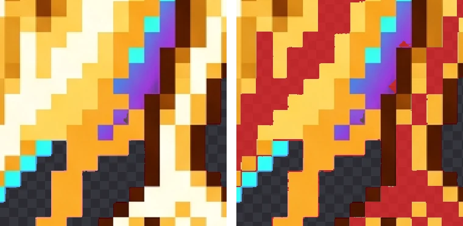

Troubleshooting: Parts of the Object Disappear
The background is gone, but so is part of your character: a bright highlight, one side of the body, a light effect. The cause depends on what disappeared and how, and so does the fix. Below are reproduced cases with measurements for each.
First, see what was lost
In BGPeel, hover over a card image (press and hold on a phone), or open the zoom view and hold, to flip between the original and the result. Switching the preview background to black and white makes semi-transparent damage easier to see. The damage usually takes one of four shapes:
- A whole area of one color vanished → the object's color was judged to be background glow.
- Near-white bright parts vanished → they were judged to be pale background.
- Edges thinned or turned semi-transparent → the mix thresholds are too high.
- A dark outline broke → outline protection is set too low.
1. A whole area of one color disappears
This causes the biggest losses. To clear glows around the background, BGPeel treats colors with a hue close to the background's as background when they're connected to it. If the object itself is in that hue range and has no outline, the removal that starts in the background spreads into the object.
In our test, the gold spirit character placed on green lost 55.02% of its body with default settings. For a green (120°) background the default glow range is 35° to 150°, the spirit's gold (about 40° to 55°) falls inside it, and its glowing body has no outline to stop the removal.
Fix: in Fine-tuning, turn off “Also remove colored glows”. In this test the loss dropped from 55.02% to 2.88%. If you still want background glows removed, narrow “Glow color range” instead; at −20° to +20° the loss was 2.89%, almost the same. The remaining 2.9% were near-white highlights caught by “Light background detection” (case 2 below); with glow removal off and that setting lowered to 20, the loss fell to 1.35%. Still, the surest fix is to regenerate on a color the object doesn't use: the same spirit lost only 1.13% on magenta (see the background color test).
The opposite mistake happens too. If a cyan glow is left over and you widen the start of “Glow color range” from −85° to −105°, cyan falls inside the range for magenta backgrounds. Applied to the real magenta spirit, it removed part of the cyan eyes and light, a 0.14% loss. Small, but the eyes are exactly where people look, so check.
2. Near-white bright parts disappear
“Light background detection” sets how far pale glows and sparkles (including the Nano Banana mark), meaning background color mixed with white, count as background. Set it high and white highlights on the object that touch the background get judged as pale background too.
Raising it from the default 40 to 100 on the original magenta spirit removed 147,678 pixels, 6.4% of the body, all of them bright cream-colored areas along the body's edge.

Fix: lower “Light background detection” to the default 40 or below. If you raised it to clear the Nano Banana mark, raise it only to the lowest value that removes the mark. For images on a white background, white parts of the object and the background are hard to separate by color; regenerating on magenta works better.
3. Edges thin out or turn semi-transparent
“Remove threshold” and “Keep threshold” decide how much background mix makes a pixel transparent, semi-transparent or opaque. Raising both to remove more background makes edge pixels more transparent, and lines only one or two pixels thick turn semi-transparent. Raising them to 0.3 and 0.7 on the spirit cost only 0.14%, but the loss wasn't at the edges: it was the purple light streaks inside the body (hue about 273°). Purples close to magenta compute as “fairly mixed with background”, so raising the thresholds turns the object's purples transparent first.
Fix: bring both back toward the defaults (0.12 and 0.5). If you were trying to remove more background, the glow and pale-background settings usually do it with less damage than these two. For images processed as “Dull / pale solid”, lowering “Color difference from background” makes the object less transparent.
4. A dark outline breaks
“Glow minimum brightness” is the level below which pixels count as outline and stop the removal. Lower it to remove a shadow and outlines become fair game too. In the slime test, lowering it from 80 to 30 removed the shadow but also cut part of the bottom outline, a 0.17% loss. It's small, but one or two missing outline pixels are noticeable.
Fix: raise it again, stopping just before the shadow returns. The balance is covered in A shadow is left behind.
Settings summary
| Symptom | Setting | Direction |
|---|---|---|
| A background-like color area vanishes entirely | Also remove colored glows / Glow color range | Turn off / narrow |
| One specific color, like cyan, vanishes | Glow color range | Narrow until it's excluded |
| White highlights vanish | Light background detection | Lower |
| Edges thin out or turn semi-transparent | Remove threshold, Keep threshold | Lower |
| Whole object semi-transparent (dull background) | Color difference from background | Lower |
| Dark outline breaks | Glow minimum brightness | Raise |
After changing settings, select just the damaged cards and click “Convert n selected”; only those are reprocessed and every other result stays as it is. Every setting's meaning and default is listed in Features.
When regenerating is the better fix
Settings only help when object and background can be told apart by color. If a large part of the object is almost exactly the background color and has no outline, no setting can remove the background while keeping that part. Regenerate on a color the object doesn't use. With a conversational tool like Nano Banana, just ask: “Keep the character exactly the same and change only the background to magenta (#FF00FF).”